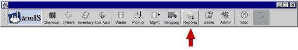
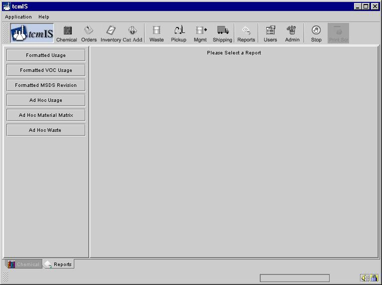

You can get to the Reports screen by clicking on the button named "Reports" as shown below.

When the report screen is loaded it looks like the figure below will all the different options of reports on the left-hand side.

To start making reports just choose the report you wish to run and click on the corresponding button. That will further load the corresponding screen of the report you want to generate.
The main difference between Formatted and Ad Hoc reports is that you can change the report fields for the Ad Hoc reports. Formatted reports use a pre set template to produce the report, which gives you no control over the report fields.
To find out more about the different reports read the next sections.